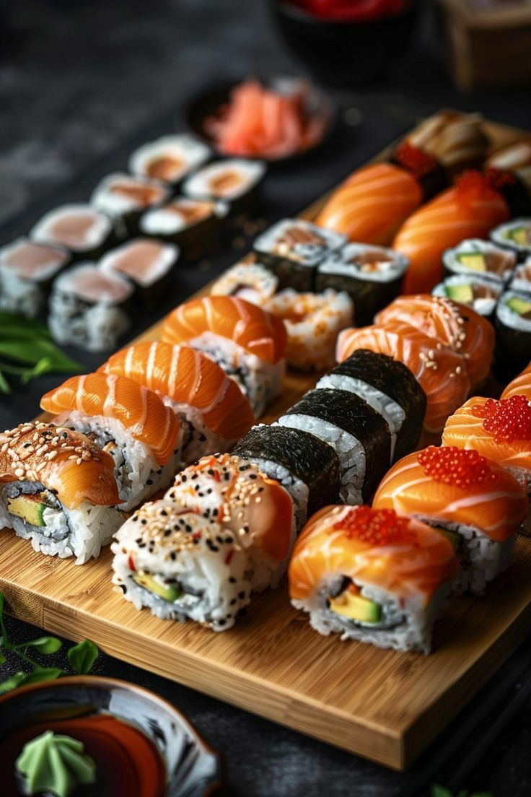
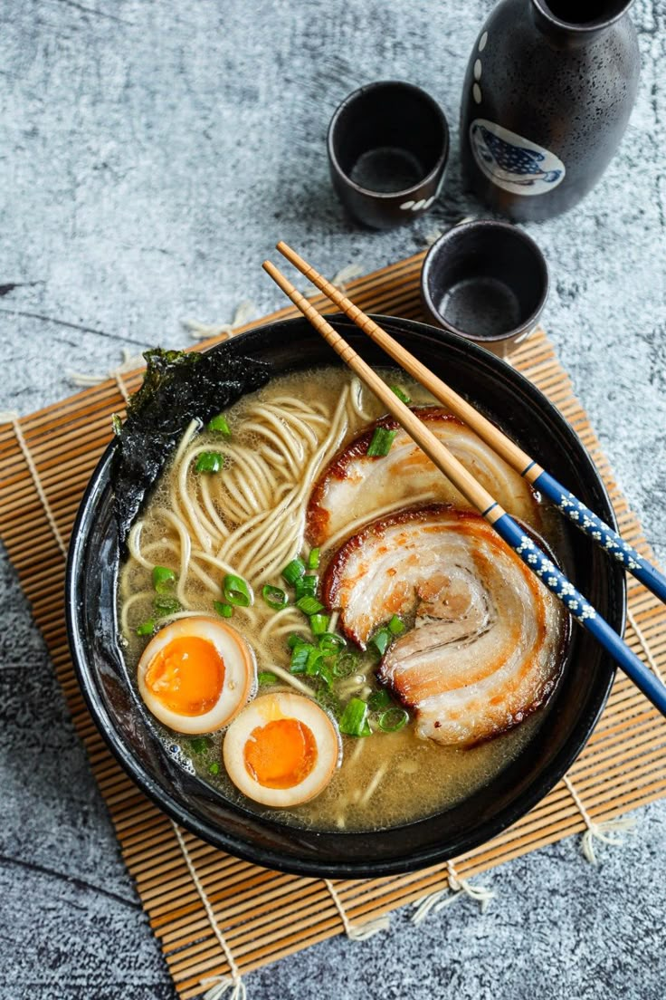
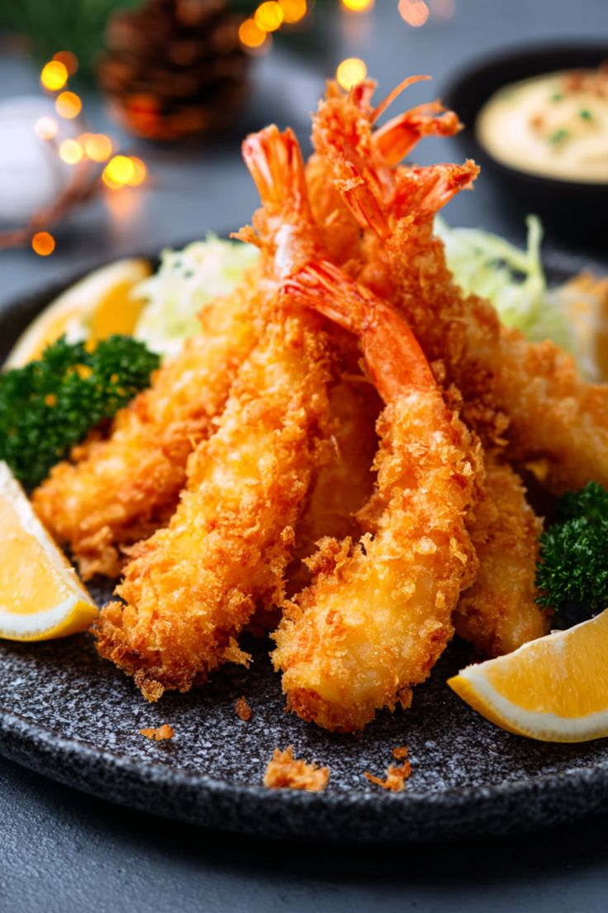
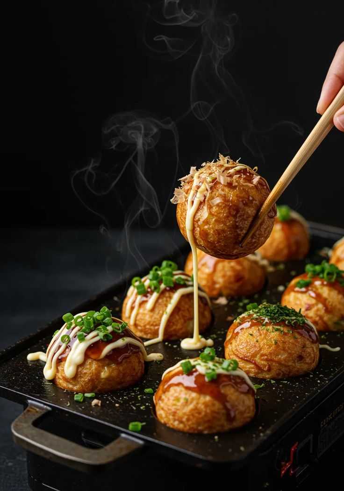
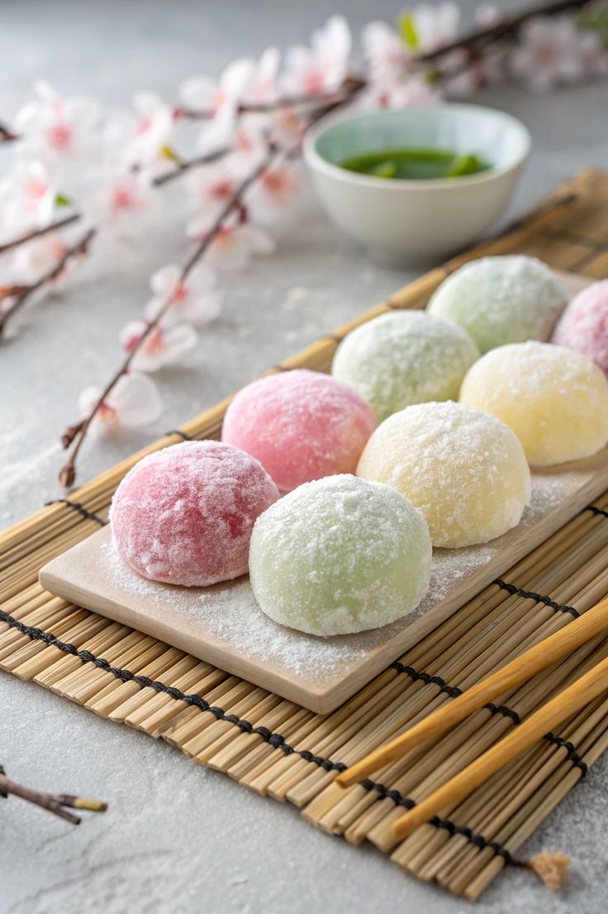
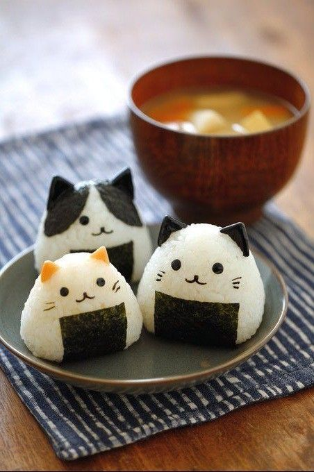

Japão para Visitantes
Um guia introdutório para te guiar em uma jornada de descobertas pelo Japão.
Um guia introdutório para te guiar em uma jornada de descobertas pelo Japão.

Um dos pratos mais reconhecidos do Japão no mundo, o sushi combina arroz temperado com vinagre com peixes frescos, frutos do mar ou vegetais. Existem diversas variações, como o nigiri, maki e temaki.

Sopa de macarrão com caldo rico, geralmente acompanhado de carne de porco, ovo marinado e vegetais. Cada região do Japão tem sua própria versão, variando no tipo de caldo e temperos.

Frutos do mar e vegetais empanados numa massa leve e crocante, fritos por imersão. Geralmente servido com um molho especial e acompanhado de arroz ou macarrão.

Bolinhos de massa recheados com pedaços de polvo, muito populares em Osaka. São servidos quentes, cobertos com molho especial, maionese e flocos de bonito.

Doce tradicional feito de arroz glutinoso, com textura macia e elástica. Pode ser recheado com pasta de feijão doce, sorvete ou outros ingredientes. É muito consumido em festivais e datas especiais.

Bolinho de arroz moldado à mão, geralmente em formato triangular ou oval, envolto em alga nori. É um alimento prático e muito popular no cotidiano japonês, encontrado em qualquer konbini.